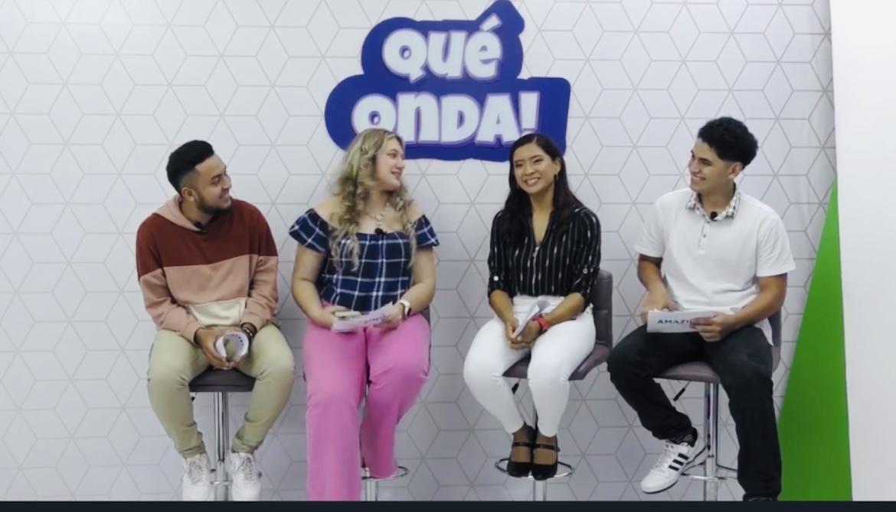
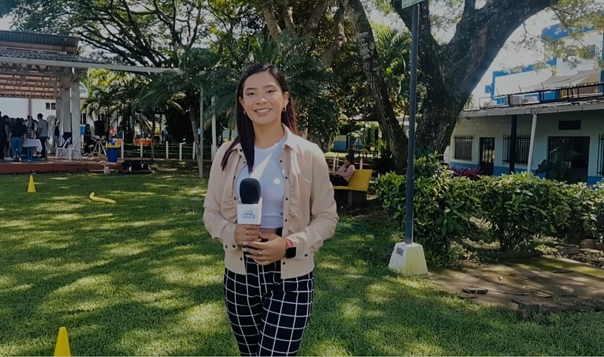

PRESENTACIÓN01 / PRESENTACIÓN
Presentación frente a cámara
Fragmentos de programas, eventos y participaciones como presentadora.
SELECCIÓN DE TRABAJOS
Una muestra de mi experiencia en presentación, periodismo y locución, a través de proyectos audiovisuales, coberturas y contenidos informativos que reflejan mi pasión por comunicar.

PRESENTACIÓN01 / PRESENTACIÓN
Fragmentos de programas, eventos y participaciones como presentadora.

PERIODISMO02 / PERIODISMO
Trabajos de redacción, producción de notas y cobertura de actividades de interés.

 LOCUCIÓN
LOCUCIÓN
03 / LOCUCIÓN
Muestras de voz, cuñas, narraciones y otros contenidos de audio.
04 / AUDIOVISUAL
Selección de contenido fotográfico y audiovisual para proyectos y redes sociales.